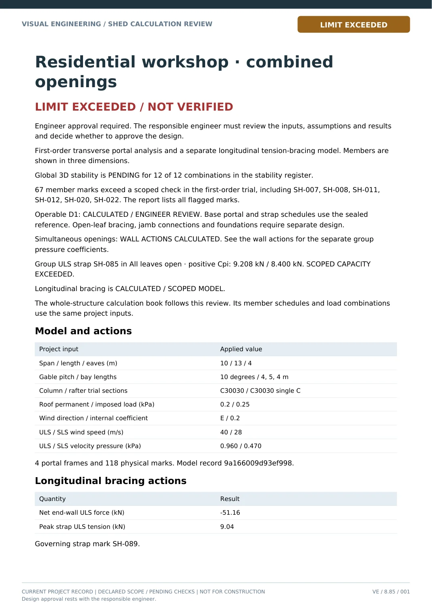

End-wall supports and strap bracing
A 10 × 13 m gable shed has a door and a raised window on its east end wall. Follow the remaining wall pressure through the columns, jambs and roof collectors to the braced walls. The example compares the sealed building and two simultaneous-opening cases under east wind.
At an internal pressure coefficient of +0.80, strap SH-085 carries 9.208 kN at ultimate against an adopted axial resistance of 8.400 kN. At −0.60 the peak shifts to SH-089 at 7.924 kN. Collector, foundation and connection design require review by the responsible engineer.
Loading the report…
